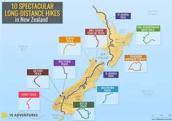

New Zealand is home to some of the worlds most beautiful walking tracks. From peaceful forests and stunning beaches to mountains and lakes, there is a walkway for everyone. Whether you want a short relaxing walk or an exciting adventure, New Zealands tracks are a great way to experience nature. Popular walks such as the **Milford Track, Abel Tasman Coast Track, and Tongariro Northern Circuit offer amazing views and unforgettable experiences. So grab your walking shoes, enjoy the fresh air, and explore the beauty of Aotearoa one step at a time!
